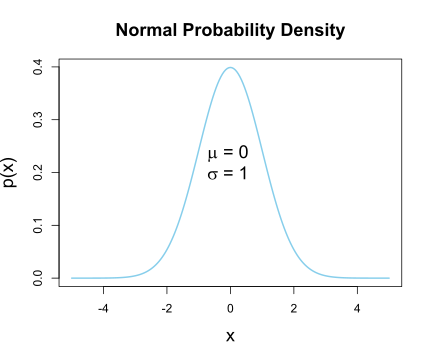

How can we derive the probability density function (pdf) of Normal Distribution? \[f_Y(y)=\frac{1}{\sqrt{2\pi}\sigma}e^{-\frac{1}{2}(\frac{y-\mu}{\sigma})^2}, \quad -\infty<y<+\infty\]
Let’s draw a normal pdf first
#draw normal pdf
x <- seq(-5, 5, length.out = 201); dx <- diff(x)[1]
y <- dnorm(x, mean = 0, sd = 1)
base::plot(x, y, type = "l", col = "skyblue",
xlab="x" , ylab="p(x)" , cex.lab=1.5,
main="Normal Probability Density" , cex.main=1.5,
lwd=2)
text( 0, .6*max(y) , bquote( paste(mu ," = 0 ") )
, cex=1.5 )
text( 0, .5*max(y) , bquote( paste(sigma ," = 1 ") )
, cex=1.5 )
Let \(W_1\), \(W_2\), . . . be a set of random variables with mean \(\mu\) and variance \(\sigma^2\), then \(E(W_i-\mu)=0\), \(Var(W_i-\mu)=\sigma^2\).
Let \(S_i=(W_i-\mu)/\sigma\), then \(E(S_i)=0\) and \(Var(S_i)=1\), and then the moment-generating functions of \(S_i\) is \(M(t)\)
Then, \(M_{(S_1+...+S_N)/\sqrt{n}}(t)=[M(t/\sqrt{n})]^n\),
\(M^{(0)}(s)t^0/0!=1\), \(M^{(1)}(s)t^1/1!=E(S_i)t^1/1!=0\), \(M^{(2)}(s)t^2/2!=M^{(2)}(s)t^2/2\), …… \[M^{(2)}(t/\sqrt{n})t^2/2=M^{(2)}(t)t^2/2n\] When \(n\to+\infty\), applying Taylor’s theorem, for some number r, |r| < |t|, \[\begin{align} \lim_{n\to+\infty}[M(t/\sqrt{n})]^n&=\lim_{n\to+\infty}[1+M^{(2)}(r)t^2/2n]^n \\ &=exp\lim_{n\to+\infty}n \;ln[1+M^{(2)}(r)t^2/2n]\\ &=exp\lim_{n\to+\infty}M^{(2)}(r)\frac{t^2}{2}\;\frac{ln[1+M^{(2)}(r)t^2/2n]}{M^{(2)}(r)t^2/2n}\\ &=exp\lim_{n\to+\infty}M^{(2)}(r)\frac{t^2}{2}\;\frac{ln[1+M^{(2)}(r)t^2/2n]-ln(1)}{M^{(2)}(r)t^2/2n} \end{align}\]
Because as \(n\to+\infty,M^{(2)}(r)\frac{t^2}{2n}\to0\) \[\lim_{n\to+\infty}\frac{ln[1+M^{(2)}(r)t^2/2n]-ln(1)}{M^{(2)}(r)t^2/2n}=ln^{(1)}1=1\] Because as \(n\to+\infty,M^{(2)}(r)=Var(S_i)=1\) \[\lim_{n\to+\infty}M^{(2)}(r)\frac{t^2}{2}=\frac{t^2}{2}\] So, \[\lim_{n\to+\infty}[M(t/\sqrt{n})]^n=e^{t^2/2}\]
\(e^{\frac{t^2}{2}}\) is the moment-generating function for a standard normal random variable. So \(\frac{S_1+...+S_N}{\sqrt{n}}=\frac{W_1+...+W_N-n\mu}{\sqrt{n}\sigma}\) is a standard normal random variable. Which means \[\lim_{n\to+\infty}P\Biggl(a\le\frac{W_1+...+W_N-n\mu}{\sqrt{n}\sigma} \le b\Biggl)=\frac{1}{\sqrt{2\pi}}\int_{a}^{b} e^{-z^2/2}dz\] , which is called Central Limit Theorem.
The moment-generating function for a normal random variable Y is: \[\begin{align} M_X(t)=E(e^{tY})&=\frac{1}{\sqrt{2\pi}\sigma}\int_{-\infty}^{+\infty}e^{ty} e^{-\frac{1}{2}(\frac{y-\mu}{\sigma})^2}dy\\ &=\frac{1}{\sqrt{2\pi}\sigma}\int_{-\infty}^{+\infty}exp(-\frac{y^2-2y\mu+\mu^2-2\sigma^2ty}{2\sigma^2})dy\\ &=\frac{1}{\sqrt{2\pi}\sigma}\int_{-\infty}^{+\infty}exp(-\frac{(y-(\mu+t\sigma^2))^2-2t\mu\sigma^2-t^2\sigma^4}{2\sigma^2})dy\\ &=\frac{1}{\sqrt{2\pi}\sigma}exp(t\mu+t^2\sigma^2/2)\int_{-\infty}^{+\infty}exp(-\frac{1}{2}\frac{(y-(\mu+t\sigma^2))^2}{\sigma^2})dy\\ &=exp(t\mu+t^2\sigma^2/2)\frac{1}{\sqrt{2\pi}\sigma}\int_{-\infty}^{+\infty}exp\Biggl[-\frac{1}{2}\Bigl[\frac{y-(\mu+t\sigma^2)}{\sigma}\Bigr]^2\Biggr]dy\\ &=e^{t\mu+t^2\sigma^2/2} \end{align}\]
Let \(Y\) is a normal random variable with mean \(\mu\) and variance \(\sigma^2\), and let \(W=aY,(a\ne0)\) \(a\) is a constant, then,
\[\begin{align}
f_W(\omega)&=\frac{1}{|a|}f_Y(\frac{1}{a}\omega)\\
&=\frac{1}{|a|}\frac{1}{\sqrt{2\pi}\sigma}\int_{-\infty}^{+\infty}e^{-\frac{1}{2}(\frac{\frac{1}{a}y-\mu}{\sigma})^2}dy\\
&=\frac{1}{|a|}\frac{1}{\sqrt{2\pi}\sigma}\int_{-\infty}^{+\infty}e^{-\frac{1}{2}(\frac{y-a\mu}{a\sigma})^2}dy
\end{align}\], which shows that \(W\) is normal random variables with mean \(a\mu\), variance \(a^2\sigma^2\).
Let \(X\) and \(Y\) are normal random variables with mean \(\mu\) and variance \(\sigma^2\), and let \(W=X+Y\), then,
\[\begin{align}
f_W(w)&=\frac{d}{dw}F_W(w)\\
&=\frac{d}{dw}P(X+Y ≤ w)\\
&=\frac{d}{dw}\Biggl[\int_{-\infty}^{+\infty}\int_{-\infty}^{w-x}f_X(x)f_Y(y)dydx\Biggr]\\
&=\frac{d}{dw}\Biggl[\int_{-\infty}^{+\infty}f_X(x)\Bigl[\int_{-\infty}^{w-x}f_Y(y)dy\Bigr]dx\Biggr]\\
&=\frac{d}{dw}\Biggl[\int_{-\infty}^{+\infty}f_X(x)F_Y(w-x)dx\Biggr]\\
&=\int_{-\infty}^{+\infty}f_X(x)\Biggl[\frac{d}{dw}F_Y(w-x)\Biggr]dx\\
&=\int_{-\infty}^{+\infty}f_X(x)f_Y(w-x)dx\\
&=\int_{-\infty}^{+\infty}\frac{1}{\sqrt{2\pi}\sigma}e^{-\frac{1}{2}(\frac{x-\mu}{\sigma})^2}\frac{1}{\sqrt{2\pi}\sigma}e^{-\frac{1}{2}(\frac{w-x-\mu}{\sigma})^2}dx\\
&=\frac{1}{2\pi\sigma^2}\int_{-\infty}^{+\infty}exp\Biggl[{-\frac{1}{2}\Bigl[(\frac{x-\mu}{\sigma})^2+(\frac{w-x-\mu}{\sigma})^2\Bigr]}\Biggr]dx\\
&=\frac{1}{2\pi\sigma^2}\int_{-\infty}^{+\infty}exp\Biggl[-\frac{1}{2}\frac{(2x^2-2wx+w^2-2w\mu+2\mu^2)}{\sigma^2}\Biggr]dx\\
&=\frac{1}{2\pi\sigma^2}\int_{-\infty}^{+\infty}exp\Biggl[-\frac{1}{2}\frac{(x^2-wx+\frac{1}{2}w^2-w\mu+\mu^2)}{\frac{1}{2}\sigma^2}\Biggr]dx\\
&=\frac{1}{2\pi\sigma^2}\int_{-\infty}^{+\infty}exp\Biggl[-\frac{1}{2}\frac{(x-\frac{1}{2}w)^2+\frac{1}{4}w^2-w\mu+\mu^2)}{\frac{1}{2}\sigma^2}\Biggr]dx\\
&=\frac{1}{\sqrt{2\pi}\sqrt{2}\sigma}exp\Biggl[-\frac{1}{2}\frac{\frac{1}{4}w^2-w\mu+\mu^2}{(\frac{1}{\sqrt{2}}\sigma)^2}\Biggr]
\frac{1}{\sqrt{2\pi}\frac{1}{\sqrt{2}}\sigma}\int_{-\infty}^{+\infty}exp\Biggl[-\frac{1}{2}\frac{(x-\frac{1}{2}w)^2}{(\frac{1}{\sqrt{2}}\sigma)^2}\Biggr]dx\\
&=\frac{1}{\sqrt{2\pi}\sqrt{2}\sigma}exp\Biggl[-\frac{1}{2}\frac{\frac{1}{4}w^2-w\mu+\mu^2}{(\frac{1}{\sqrt{2}}\sigma)^2}\Biggr]\\
&=\frac{1}{\sqrt{2\pi}\sqrt{2}\sigma}exp\Biggl[-\frac{1}{2}\frac{w^2-4w\mu+4\mu^2}{(\sqrt{2}\sigma)^2}\Biggr]\\
&=\frac{1}{\sqrt{2\pi}\sqrt{2}\sigma}exp\Biggl[-\frac{1}{2}\frac{(w-2\mu)^2}{(\sqrt{2}\sigma)^2}\Biggr]
\end{align}\], then \(W=X+Y\) is a new normal random variable with mean \(2\mu\), variance \(2\sigma^2\).
If \(X\) and \(Y\) are normal random variables with different means \(\mu_X\) and \(\mu_Y\) and different variances \(\sigma_X^2\) and \(\sigma_Y^2\), and let \(W=X+Y\), then, \[\begin{align} f_W(w)&=\frac{1}{\sqrt{2\pi}\sqrt{\sigma_X^2+\sigma_Y^2}}exp\Biggl[-\frac{1}{2}\Bigl[\frac{w-(\mu_X+\mu_Y)}{\sqrt{\sigma_X^2+\sigma_Y^2}}\Bigr]^2\Biggr] \end{align}\], then \(W=X+Y\) is a new normal random variable with mean \(\mu_X+\mu_Y\), variance \(\sqrt{\sigma_X^2+\sigma_Y^2}\).